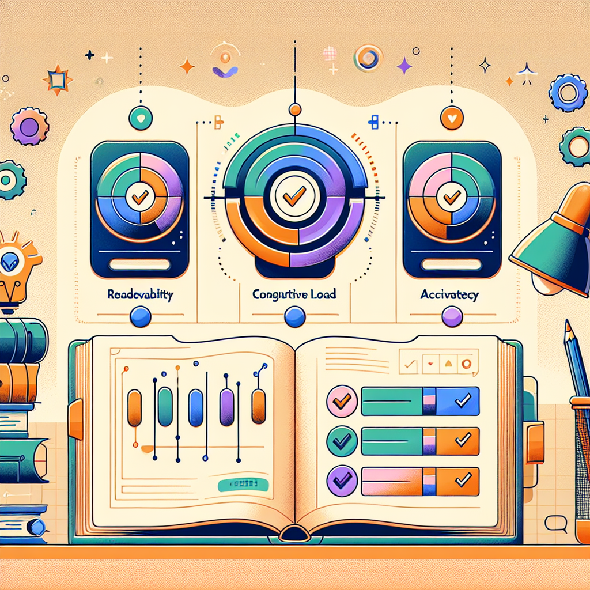
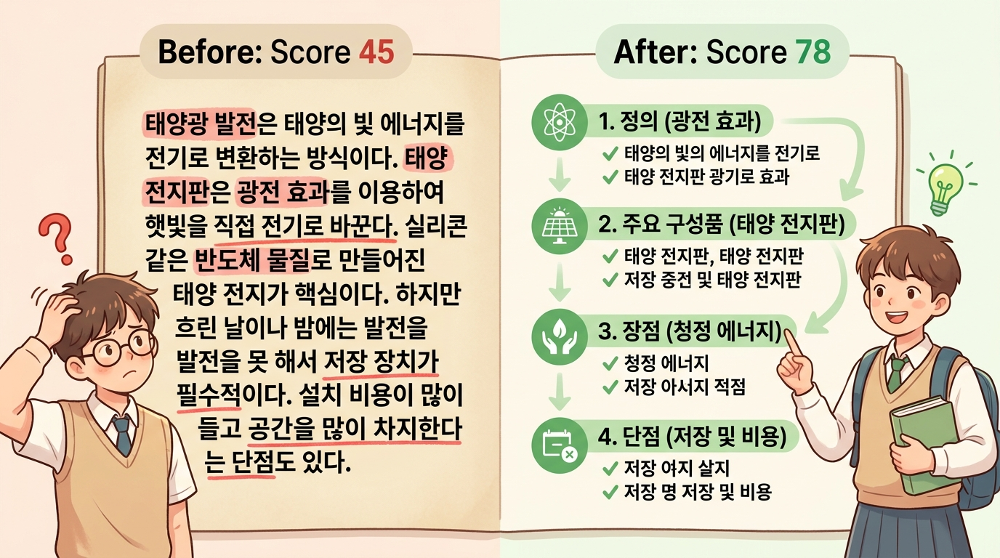
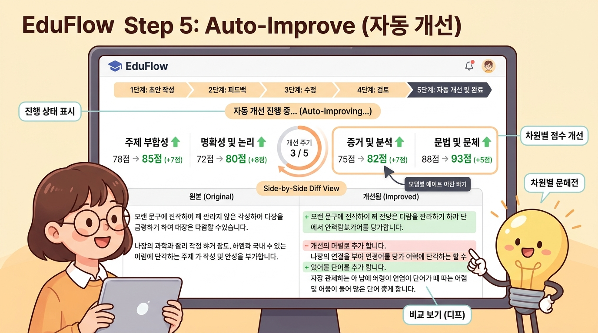

Step 5 · 교육 평가 — AI가 분석하는 가독성·인지부하·동기부여·정확성¶
이 챕터에서 배울 것¶
- AI의 4차원 자동 평가(가독성·인지 부하·동기부여·정확성)가 각각 무엇을 측정하는지 설명할 수 있습니다.
- 평가 리포트의 점수와 진단 메시지를 읽고 해석하는 방법을 익힙니다.
- 목표 점수를 설정하여 평가→개선→재생성→재평가 사이클이 자동으로 돌아가는 '자동 개선' 기능을 체험합니다.
- 이전 챕터(Step 4)에서 생성한 본문의 평가 리포트를 확인하고, 낮은 점수 항목을 직접 개선하여 품질을 높입니다.
도입 — 글을 다 썼는데, 이게 정말 좋은 교재일까?¶
지난 챕터(Step 4)에서 우리는 AI와 함께 교재 본문을 생성했습니다. 드디어 빈 화면이 글로 채워졌습니다. 뿌듯합니다.
그런데 한 발짝 물러서서 읽어 보면, 이런 생각이 스멀스멀 올라옵니다.
"이 문장, 우리 반 아이들이 읽으면 이해할 수 있을까?" "새로운 개념이 한꺼번에 너무 많이 나오는 건 아닐까?" "학생들이 첫 페이지에서 흥미를 잃으면 어쩌지?" "혹시 잘못된 정보가 섞여 있진 않을까?"
이 네 가지 걱정, 사실 교재 품질의 핵심입니다. 하지만 교사 한 사람이 이 모든 것을 꼼꼼히 점검하려면 시간이 엄청나게 듭니다. 긴 본문의 문장 길이를 하나하나 세고, 새 개념의 밀도를 계산하고, 사실관계를 전부 확인하는 일은 교재 집필만큼이나 고된 작업입니다.
여기서 AI가 다시 등장합니다.
에듀플로의 Step 5는 이 네 가지 걱정을 숫자와 진단 메시지로 바꿔 주는 단계입니다. 마치 건강검진 결과지를 받아 보듯, 교재의 '건강 상태'를 한눈에 파악할 수 있습니다. 그리고 문제가 발견되면, AI가 자동으로 처방까지 해 줍니다.
이번 챕터에서는 그 '교재 건강검진'을 직접 체험해 봅시다.
본문¶
1. 왜 교재에도 '품질 검사'가 필요한가?¶
자동차 공장을 떠올려 보세요. 차체를 조립하고 엔진을 얹으면 끝일까요? 아닙니다. 출고 전에 반드시 품질 검사(QC, Quality Control) 를 거칩니다. 브레이크가 제대로 작동하는지, 핸들이 정확히 돌아가는지, 안전벨트가 충격을 견디는지 하나하나 확인합니다. 검사를 통과해야 비로소 고객에게 전달됩니다.
교재도 마찬가지입니다. 본문을 생성한 것은 자동차를 조립한 것에 해당합니다. 이 교재가 실제로 학생에게 전달되기 전에, 읽을 수 있는지, 이해할 수 있는지, 흥미를 느끼는지, 내용이 정확한지 확인하는 과정이 필요합니다.
전통적으로 이 역할은 동료 교사의 검토나 저자 본인의 재독이 담당했습니다. 물론 이 과정은 여전히 소중합니다. 하지만 사람의 눈으로 잡기 어려운 것들이 있습니다. 예를 들어 "이 챕터의 평균 문장 길이가 32자"라는 사실은 직감으로 알기 어렵습니다. "새 개념이 한 페이지에 7개 등장한다"는 것도 일일이 세어 보지 않으면 모릅니다.
AI는 이런 정량적 분석에 강합니다. 사람이 놓치기 쉬운 패턴을 빠르게 발견합니다. 반면, "이 비유가 우리 반 학생들에게 와닿는가?"처럼 맥락적 판단은 여전히 교사의 몫입니다. Step 5는 이 둘을 결합합니다. AI가 수치를 제공하고, 교사가 그 수치를 해석하여 최종 결정을 내립니다.
에듀플로 헌법 제1조 — 교사 주권을 기억하세요. AI는 진단 결과를 제시할 뿐, "이 교재를 이렇게 고쳐야 합니다"라고 강제하지 않습니다. 최종 판단은 언제나 선생님의 손에 있습니다.
2. 4차원 평가 — 교재를 보는 네 개의 렌즈¶
에듀플로의 교육 평가는 교재를 네 가지 차원에서 동시에 바라봅니다. 하나의 차원만 좋다고 좋은 교재가 아닙니다. 네 차원이 균형을 이루어야 학생에게 효과적인 교재가 됩니다.
비유를 하나 들어 볼까요? 건강검진에서 혈압만 정상이면 건강한 것이 아닙니다. 혈당, 콜레스테롤, 간 수치 등 여러 지표가 함께 정상 범위에 있어야 합니다. 교재도 마찬가지입니다.
이제 네 개의 렌즈를 하나씩 살펴봅시다.
렌즈 ① 가독성 — "학생이 읽을 수 있는가?"¶
가독성(Readability) 은 텍스트가 물리적으로 얼마나 읽기 쉬운지를 측정합니다. 내용의 깊이와는 별개입니다. 아무리 좋은 내용이라도 문장이 길고 어휘가 어려우면 학생은 첫 문단에서 포기합니다.
AI가 가독성을 평가할 때 살펴보는 요소는 다음과 같습니다.
| 측정 항목 | 의미 | 예시 |
|---|---|---|
| 평균 문장 길이 | 한 문장의 평균 글자 수 | 중학생 대상: 20자 이내 권장 |
| 어휘 수준 | 대상 학년에 맞는 어휘인지 | "인과관계" vs "원인과 결과" |
| 전문 용어 밀도 | 전체 단어 중 전문 용어의 비율 | 10% 이하 권장 (초등) |
| 문단 길이 | 한 문단의 문장 수 | 3~5문장 (중학생 기준) |
리포트에서 이렇게 보입니다:
가독성 점수: 72 / 100 - 평균 문장 길이: 27자 (목표: 20자 이내) ⚠️ - 어휘 수준: 적절 ✅ - 전문 용어 밀도: 8% (목표: 10% 이하) ✅ - 3장 2절에서 48자 문장 발견 — 분리를 권장합니다
점수 옆의 아이콘이 핵심입니다. ✅는 합격, ⚠️는 주의, ❌는 개선 필요. 이 신호등만 보아도 어디를 고쳐야 하는지 바로 알 수 있습니다.
💡 선생님 팁: 문장 길이가 긴 것이 반드시 나쁜 것은 아닙니다. 고등학생 대상 교재에서 학술적 설명을 할 때는 긴 문장이 자연스러울 수 있습니다. AI의 진단은 "참고 신호"이지 "절대 규칙"이 아닙니다. 교사의 판단이 우선합니다.
렌즈 ② 인지 부하 — "학생의 뇌가 감당할 수 있는가?"¶
인지 부하(Cognitive Load) 는 학습자의 작업 기억에 얼마나 많은 부담이 걸리는지를 나타냅니다. 쉽게 말해, "한 번에 너무 많은 것을 외우게 하지 않는가?"를 점검합니다.
비유를 하나 들겠습니다. 양손으로 공을 받는다고 상상하세요. 공이 3개면 받을 수 있습니다. 하지만 10개를 동시에 던지면? 대부분 떨어뜨립니다. 새로운 개념도 마찬가지입니다. 한꺼번에 너무 많이 주면 학생의 뇌는 '과부하' 상태가 됩니다.
AI가 인지 부하를 평가할 때 살펴보는 요소는 다음과 같습니다.
| 측정 항목 | 의미 | 예시 |
|---|---|---|
| 단위당 새 개념 수 | 한 절(section)에 처음 등장하는 개념의 수 | 중학생: 절당 2~3개 권장 |
| 예시 밀도 | 새 개념 대비 예시의 비율 | 개념 1개당 예시 2개 이상 (중학생) |
| 정보 밀도 | 텍스트 대비 핵심 정보의 압축도 | 한 문단에 핵심 정보 2개 이하 |
| 선행 지식 참조 | 이전에 배운 개념을 참조하는 빈도 | 적절한 연결이 있으면 부하 감소 |
리포트에서 이렇게 보입니다:
인지 부하 점수: 58 / 100 ⚠️ - 2절에서 새 개념 6개가 연속 등장합니다 (목표: 3개 이하) ❌ - 전체 예시 밀도: 개념당 0.8개 (목표: 2개 이상) ❌ - 4절의 선행 지식 참조: 우수 ✅ - 권장: 2절의 개념을 2개 절로 분리하고, 각 개념에 예시를 추가하세요
인지 부하 점수가 낮다는 것은 "내용이 틀렸다"는 뜻이 아닙니다. "내용은 맞지만, 학생에게 전달하는 방식이 과하다"는 뜻입니다. 요리에 비유하면, 재료는 좋은데 한 접시에 너무 많이 담은 상태입니다.
렌즈 ③ 동기부여 — "학생이 계속 읽고 싶은가?"¶
동기부여(Motivation) 는 학생이 교재를 읽으면서 흥미를 유지하고, 학습을 계속하고 싶은 마음이 드는지를 측정합니다.
솔직하게 말해 봅시다. 내용이 정확하고 읽기 쉽더라도, 재미가 없으면 학생은 2페이지에서 눈을 돌립니다. 특히 자기주도 학습 교재에서는 동기부여가 더욱 중요합니다. 옆에서 선생님이 "자, 집중!" 하고 말해줄 수 없으니까요.
AI가 동기부여를 평가할 때 살펴보는 요소는 다음과 같습니다.
| 측정 항목 | 의미 | 예시 |
|---|---|---|
| 도입 흥미도 | 챕터 시작이 호기심을 유발하는지 | 질문, 이야기, 놀라운 사실로 시작 |
| 실생활 연결 | 배우는 내용이 일상과 연결되는지 | "이 공식은 스마트폰 GPS에 쓰입니다" |
| 성취감 설계 | 작은 성공 경험이 배치되어 있는지 | 중간 퀴즈, "여기까지 잘 따라왔습니다!" |
| 능동적 참여 유도 | 학생이 직접 생각하거나 행동하는 구간 | "잠깐, 여기서 예상해 보세요" |
리포트에서 이렇게 보입니다:
동기부여 점수: 85 / 100 ✅ - 도입부: 실생활 사례로 시작, 흥미 유발 우수 ✅ - 실생활 연결: 3곳에서 발견 ✅ - 성취감 설계: 중간 체크포인트 없음 ⚠️ - 권장: 2절과 3절 사이에 간단한 자기 점검 활동을 추가하세요
동기부여 점수가 높다는 것은 학생이 "아, 이거 재밌다"고 느낄 가능성이 높다는 뜻입니다. 낮다면, 내용 자체를 바꿀 필요는 없고, 전달 방식에 양념을 더하면 됩니다.
렌즈 ④ 정확성 — "내용이 맞는가?"¶
정확성(Accuracy) 은 가장 기본적이면서도 가장 중요한 차원입니다. 아무리 읽기 쉽고, 인지 부하가 낮고, 재미있더라도 내용이 틀리면 교재로서 가치가 없습니다.
특히 AI가 생성한 텍스트에서 정확성 검증은 매우 중요합니다. AI는 때때로 그럴듯하지만 잘못된 정보를 만들어 낼 수 있습니다. 이것을 할루시네이션(hallucination) 이라고 부릅니다. 마치 꿈에서 본 것을 현실이라고 말하는 것과 비슷합니다.
AI가 정확성을 평가할 때 살펴보는 요소는 다음과 같습니다.
| 측정 항목 | 의미 | 예시 |
|---|---|---|
| 사실 검증 | 제시된 사실이 정확한지 | 날짜, 수치, 인물, 사건 |
| 개념 정의 | 학술적 정의가 올바른지 | "광합성은 ○○이다"가 맞는지 |
| 최신성 | 오래된 정보가 포함되어 있지 않은지 | 2020년 데이터를 최신이라고 소개하는 경우 |
| 내적 일관성 | 교재 내에서 서로 모순되는 설명이 없는지 | 2장에서 A라고 했는데 5장에서 B라고 한 경우 |
리포트에서 이렇게 보입니다:
정확성 점수: 91 / 100 - 사실 검증: 1건 주의 필요 ⚠️ → 3절: "대한민국 인구는 약 5,200만 명" — 최신 통계 확인 권장 - 개념 정의: 모두 정확 ✅ - 내적 일관성: 이상 없음 ✅

⚠️ 중요한 주의사항: AI의 정확성 평가도 완벽하지 않습니다. AI가 "정확합니다 ✅"라고 말한 항목도 교사가 반드시 직접 확인해야 합니다. 특히 전공 교과의 핵심 개념은 교사 본인의 전문 지식으로 최종 검증하세요. AI의 평가는 '1차 필터'이지 '최종 판정'이 아닙니다.
3. 네 차원의 균형 — 좋은 교재의 조건¶
네 차원이 각각 무엇인지 알았으니, 이제 이것들이 어떻게 함께 작동하는지 살펴봅시다.
아래 그림은 네 차원이 서로 영향을 주고받는 관계를 보여줍니다.
네 차원은 순환 관계입니다:
- 문장이 읽기 쉬우면(가독성 ↑) → 뇌의 부담이 줄어듭니다(인지 부하 ↓)
- 이해가 잘 되면(인지 부하 ↓) → "나도 할 수 있다"는 자신감이 생깁니다(동기부여 ↑)
- 흥미를 가지고 집중하면(동기부여 ↑) → 정확한 지식이 장기 기억에 남습니다(정확성 활용)
- 정확한 내용을 쉽게 풀어 쓰면(정확성 + 가독성) → 다시 읽기 쉬운 교재가 됩니다
반대로, 하나가 무너지면 연쇄적으로 나빠집니다.
| 상황 | 결과 |
|---|---|
| 가독성은 높지만 정확성이 낮으면 | 학생이 잘못된 지식을 쉽게 받아들임 |
| 정확성은 높지만 가독성이 낮으면 | 학생이 읽기를 포기함 |
| 인지 부하가 높으면 | 동기부여가 떨어져 학습을 중단함 |
| 동기부여만 높고 정확성이 낮으면 | 재미있지만 배움이 없는 교재가 됨 |
핵심 메시지: 좋은 교재는 네 차원이 모두 일정 수준 이상을 유지하는 교재입니다. 에듀플로의 평가 리포트는 이 균형을 한눈에 보여줍니다.
4. 평가 리포트 읽는 법 — 실전 가이드¶
이제 에듀플로에서 실제 평가 리포트를 만나면 어떻게 읽어야 하는지 알아봅시다.
4-1. 리포트의 구성¶
평가 리포트는 세 부분으로 구성됩니다.
① 종합 점수 카드 네 차원의 점수가 한 화면에 표시됩니다. 각 차원은 0~100점 사이의 점수를 받습니다.
| 점수 구간 | 의미 | 아이콘 |
|---|---|---|
| 90~100 | 우수 — 수정 불필요 | ✅ |
| 70~89 | 양호 — 소폭 개선 권장 | ✅ |
| 50~69 | 주의 — 특정 항목 개선 필요 | ⚠️ |
| 0~49 | 개선 필요 — 해당 차원 재작성 권장 | ❌ |
② 차원별 상세 진단 각 차원을 클릭하면 하위 항목별 점수와 구체적인 진단 메시지가 나타납니다. 앞에서 살펴본 "가독성: 72점, 평균 문장 길이 27자…" 같은 내용이 여기에 해당합니다.
③ 개선 제안 낮은 점수를 받은 항목에 대해 AI가 구체적인 개선 방법을 제안합니다. 예를 들어:
- "2절의 48자 문장을 두 문장으로 분리하세요"
- "3절에 실생활 예시를 1개 추가하세요"
- "'산화 환원 반응'이라는 용어가 설명 없이 등장합니다. 첫 사용 시 정의를 추가하세요"
4-2. 리포트를 읽는 순서¶
처음 리포트를 받으면 어디부터 봐야 할지 막막할 수 있습니다. 다음 순서를 권장합니다.
핵심은 "가장 낮은 차원부터"입니다. 90점짜리를 95점으로 올리는 것보다, 45점짜리를 70점으로 올리는 것이 교재 전체 품질에 훨씬 큰 영향을 미칩니다.
5. 자동 개선 기능 — 평가와 수정의 반복을 AI에게 맡기기¶
이제 이 챕터의 가장 강력한 기능을 소개합니다. 자동 개선(Auto-Improve) 기능입니다.
5-1. 자동 개선이란?¶
직접 수정하는 방식은 이렇습니다: 리포트를 읽고 → 문제를 파악하고 → 본문을 수정하고 → 다시 평가를 돌리고 → 결과를 확인합니다. 이 과정을 수동으로 반복하면 시간이 많이 걸립니다.
자동 개선은 이 반복을 AI가 대신해 줍니다. 교사가 할 일은 딱 두 가지입니다.
- 목표 점수를 설정합니다 (예: 네 차원 모두 80점 이상)
- '자동 개선 시작' 버튼을 누릅니다
그러면 AI가 다음 사이클을 자동으로 반복합니다:
5-2. 목표 점수 설정하기¶
목표 점수는 교재의 성격과 대상에 따라 다르게 설정하는 것이 좋습니다.
| 교재 유형 | 가독성 목표 | 인지 부하 목표 | 동기부여 목표 | 정확성 목표 |
|---|---|---|---|---|
| 초등학생 워크북 | 90 이상 | 90 이상 | 85 이상 | 85 이상 |
| 중학생 교과서 | 80 이상 | 80 이상 | 80 이상 | 90 이상 |
| 고등학생 심화 교재 | 70 이상 | 70 이상 | 75 이상 | 95 이상 |
| 교사 연수 자료 | 70 이상 | 65 이상 | 70 이상 | 95 이상 |
💡 선생님 팁: 처음에는 모든 차원을 70점 이상으로 설정하는 것을 권장합니다. 목표가 너무 높으면 자동 개선 사이클이 많이 돌아 시간이 오래 걸릴 수 있습니다. 70점을 달성한 후에 점진적으로 올려 보세요.
5-3. 자동 개선의 동작 원리¶
자동 개선이 본문을 어떻게 수정하는지 구체적으로 알아봅시다.
가독성이 낮을 때 AI가 하는 일: - 긴 문장을 두 문장으로 분리합니다 - 어려운 어휘를 대상 학년에 맞는 쉬운 어휘로 교체합니다 - 설명 없이 등장한 전문 용어에 괄호 설명을 추가합니다
인지 부하가 높을 때 AI가 하는 일: - 한 절에 몰려 있는 새 개념을 여러 절로 분산합니다 - 개념과 개념 사이에 예시를 삽입합니다 - "잠깐, 여기서 정리해 봅시다" 같은 중간 정리 구간을 추가합니다
동기부여가 낮을 때 AI가 하는 일: - 도입부에 질문이나 실생활 사례를 추가합니다 - "이것이 왜 중요한가?"를 설명하는 문장을 삽입합니다 - 중간에 자기 점검 활동을 배치합니다
정확성이 낮을 때 AI가 하는 일: - 의심스러운 사실에 ⚠️ 표시를 붙이고 교사에게 확인을 요청합니다 - 개념 정의가 불명확한 부분을 더 정밀하게 재작성합니다 - 교재 내 서로 모순되는 설명을 찾아서 통일합니다
⚠️ 중요: 자동 개선이 끝나면 반드시 교사가 결과를 검토해야 합니다. AI가 문장을 분리하면서 의미가 달라질 수 있고, 쉬운 어휘로 바꾸면서 정확성이 떨어질 수 있습니다. 자동 개선은 '초안 수정'이지 '최종 완성'이 아닙니다.
6. 자동 개선 전후 비교 — 실제로 어떻게 달라지는가?¶
말로만 설명하면 와닿지 않으니, 실제 예시를 통해 자동 개선 전후를 비교해 봅시다.
📌 예시: 중학교 2학년 과학 — "광합성" 설명
개선 전 (인지 부하 점수: 45)
광합성은 엽록체의 틸라코이드 막에서 일어나는 명반응과 스트로마에서 일어나는 암반응(캘빈 회로)으로 구성되며, 명반응에서 물이 분해되어 산소, ATP, NADPH가 생성되고, 암반응에서 이산화탄소가 고정되어 포도당이 합성됩니다.
개선 후 (인지 부하 점수: 78)
광합성은 두 단계로 나뉩니다.
첫 번째는 명반응입니다. 햇빛이 있어야 일어나는 반응이라서 '명(明, 밝을 명)'반응이라고 부릅니다. 엽록체 안의 틸라코이드 막이라는 곳에서 진행됩니다. 이 과정에서 물이 분해되어 산소가 나오고, 에너지 운반체(ATP, NADPH)가 만들어집니다.
두 번째는 암반응입니다. 빛이 직접 필요하지 않아서 '암(暗, 어두울 암)'반응이라고 부릅니다. 엽록체의 스트로마라는 공간에서 진행됩니다. 명반응에서 만든 에너지를 이용해 이산화탄소를 포도당으로 바꿉니다.
차이가 보이시나요?
- 한 문장 → 여러 문장: 긴 문장 하나를 짧은 문장 여러 개로 나눴습니다
- 한꺼번에 → 단계별: 명반응과 암반응을 분리하여 하나씩 설명합니다
- 용어 설명 추가: '명(明)'과 '암(暗)'의 한자 뜻을 함께 제시합니다
- 에너지 운반체: ATP, NADPH를 묶어서 쉬운 표현으로 먼저 소개합니다
내용은 같습니다. 전달 방식만 달라졌을 뿐입니다. 그런데 인지 부하 점수는 45에서 78로 크게 올랐습니다.

실습 — 내 교재의 평가 리포트 확인하고 개선하기¶
이제 직접 해 볼 시간입니다. Step 4에서 생성한 본문을 평가하고, 낮은 점수 항목을 개선해 봅시다.
실습 1: 평가 리포트 확인하기¶
따라해 보세요:
- 에듀플로에서 내 프로젝트를 엽니다
- 왼쪽 메뉴에서 Step 5 · 교육 평가를 클릭합니다
- 평가할 챕터를 선택합니다 (Step 4에서 만든 챕터)
- '평가 실행' 버튼을 클릭합니다
- 잠시 기다리면 네 차원의 점수가 나타납니다
확인할 것: - [ ] 네 차원의 종합 점수를 메모합니다 - 가독성: 점 - 인지 부하: 점 - 동기부여: 점 - 정확성: 점 - [ ] 가장 낮은 점수의 차원은 무엇인가요? → ___ - [ ] 해당 차원에서 ❌ 표시가 붙은 항목을 메모합니다
실습 2: 수동으로 한 항목 개선하기¶
자동 개선을 사용하기 전에, 한 항목만 직접 수정해 봅시다. 수동 경험이 있어야 자동 개선의 결과도 제대로 판단할 수 있습니다.
따라해 보세요:
- 실습 1에서 찾은 가장 낮은 항목의 개선 제안을 읽습니다
- AI의 제안이 타당한지 교사의 눈으로 판단합니다
- 타당하다면, 해당 본문으로 이동하여 직접 수정합니다
- 예: "문장이 길다" → 두 문장으로 분리
- 예: "예시가 부족하다" → 실생활 예시 한 개 추가
- 예: "전문 용어 설명이 없다" → 괄호 설명 추가
- 수정 후 재평가를 실행합니다
- 점수가 어떻게 변했는지 확인합니다
💡 잘 안 될 때: 수정했는데 점수가 오히려 내려갔다면, 수정 과정에서 다른 차원에 영향을 준 것일 수 있습니다. 예를 들어, 자세한 설명을 추가하면 가독성은 올라가지만 인지 부하가 높아질 수 있습니다. 이럴 때는 네 차원의 균형을 함께 살펴보세요.
실습 3: 자동 개선 체험하기¶
이제 AI에게 개선을 맡겨 봅시다.
따라해 보세요:
- Step 5 화면에서 '자동 개선' 탭을 클릭합니다
- 목표 점수를 설정합니다
- 처음이라면 네 차원 모두 70점으로 설정하세요
- '자동 개선 시작' 버튼을 클릭합니다
- AI가 사이클을 돌기 시작합니다
- 화면에 현재 사이클 수와 각 차원의 점수 변화가 표시됩니다
- 보통 2~5회 사이클이면 목표에 도달합니다
- 목표 달성 후, 개선된 본문과 원본을 나란히 비교합니다
확인할 것: - [ ] 자동 개선 전후의 점수 변화를 기록합니다 - [ ] AI가 어떤 부분을 어떻게 수정했는지 3가지 이상 찾습니다 - [ ] 수정된 내용 중 "교사로서 동의하지 않는 부분"이 있는지 검토합니다 - [ ] 동의하지 않는 부분은 직접 되돌리거나 재수정합니다
⚠️ 실습에서 가장 중요한 단계: 마지막 항목인 "교사로서 동의하지 않는 부분 검토"입니다. 자동 개선은 편리하지만, 교사의 의도와 다른 방향으로 수정될 수 있습니다. 반드시 최종 검토를 거치세요.

정리¶
이번 챕터에서 배운 핵심 내용을 세 줄로 요약합니다.
- 교재 품질은 네 차원(가독성·인지 부하·동기부여·정확성)의 균형으로 결정됩니다. 하나만 높다고 좋은 교재가 아닙니다.
- 평가 리포트는 진단서입니다. 가장 낮은 차원부터 읽고, AI의 개선 제안을 교사의 눈으로 판단하세요.
- 자동 개선은 강력하지만 만능이 아닙니다. 목표 점수를 설정하고 AI에게 맡기되, 최종 결과는 반드시 교사가 검토하세요.
에듀플로 워크플로우에서의 위치¶
지금 우리는 Step 5에 있습니다. 본문(Step 4)은 완성되었고, 그 품질을 검증하는 단계를 마쳤습니다. 다음 챕터인 Step 6 · 인터랙티브에서는 교재에 생명을 불어넣습니다. Mermaid 다이어그램, 이미지, 코드 실행, 퀴즈 같은 인터랙티브 요소를 본문 안에 배치하여, 학생이 눈으로 보고 손으로 만지며 배울 수 있는 교재를 완성합니다.
Step 5에서 품질을 다듬은 본문 위에 인터랙티브 요소가 얹어지면, 교재는 비로소 "읽는 문서"에서 "경험하는 학습 도구"로 변합니다.
확인 문제¶
스스로 점검해 봅시다. 아래 문제를 읽고 답을 떠올린 후, 해설을 확인하세요.
문제 1. 에듀플로의 교육 평가가 측정하는 네 가지 차원을 모두 쓰세요.
정답 확인
가독성, 인지 부하, 동기부여, 정확성문제 2. 인지 부하 점수가 낮다는 것은 어떤 의미인가요? "내용이 틀렸다"와 같은 뜻인가요?
정답 확인
아닙니다. 인지 부하 점수가 낮다는 것은 "내용은 맞지만, 학생에게 전달하는 방식이 과하다"는 뜻입니다. 새 개념이 한꺼번에 너무 많이 등장하거나, 예시가 부족하거나, 정보 밀도가 높은 상태입니다. 내용 자체의 옳고 그름은 '정확성' 차원에서 다룹니다.문제 3. 자동 개선 기능을 사용한 후, 교사가 반드시 해야 하는 일은 무엇인가요?
정답 확인
AI가 수정한 결과를 교사가 직접 검토해야 합니다. 자동 개선은 문장을 분리하거나 어휘를 교체하면서 원래 의도와 달라질 수 있고, 쉬운 표현으로 바꾸면서 정확성이 떨어질 수도 있습니다. 교사의 최종 검토가 반드시 필요합니다.문제 4. 평가 리포트를 읽을 때, 가장 먼저 살펴봐야 하는 차원은 어떤 것인가요?
정답 확인
점수가 가장 낮은 차원부터 살펴봅니다. 90점을 95점으로 올리는 것보다 45점을 70점으로 올리는 것이 교재 전체 품질에 훨씬 큰 영향을 미치기 때문입니다.문제 5. AI가 정확성 평가에서 "✅ 정확합니다"라고 표시한 항목은 더 이상 확인하지 않아도 될까요?